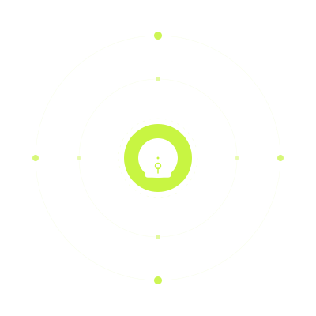

The governance layer
for design tokens
A single source of truth for design decisions that survives
frameworks, platforms, and time.
WHAT IS UNDERLITH?
Underlith is a design token system built on CSS Variables, providing a stable, framework-agnostic foundation beneath the UI. It defines design decisions as constraints — not implementations.
Unlike UI libraries that couple design to components, Underlith defines only primitives: colors, spacing, typography, and core decisions expressed as semantic, versionable tokens.
This separation preserves design intent across platforms and implementation layers without rewriting the design system as stacks evolve.

WHY UNDERLITH EXISTS
Most design systems are framework-dependent — when the stack changes, they must be rebuilt.
Underlith treats design decisions as infrastructure: stable, explicit contracts that outlive any implementation.

Design decisions become stable, versionable interfaces between design and code.

Consume tokens in Tailwind, Sass, CSS-in-JS, or plain CSS without coupling to a specific stack.

A common vocabulary that designers, developers, and tools can interpret and apply consistently.
PHILOSOPHY
These principles define the architectural foundation of Underlith
across all its layers.

Design tokens are the atomic units of design meaning.

Design infrastructure must outlive frameworks.

One system. One truth. Zero divergence.
ARCHITECTURE
Underlith is structured so each layer can evolve independently
without impacting the others.
Define design decisions as CSS Variables: colors, spacing, typography, and core primitives. Semantic, stable, and platform-agnostic.
Apply tokens to native HTML elements, establishing predictable defaults and consistent rendering — without adding abstractions.
Optional reference patterns for consuming tokens in real interfaces. Demonstrate usage — never prescribe a UI library.
IMPLEMENTATION
Underlith is designed as stack-agnostic infrastructure.
Tokens can be consumed directly or integrated into different styling pipelines.
Tokens are published as CSS Custom Properties in :root, keeping stable contracts between design and code.
Themes are applied via scopes like [data-theme] — only values change, rules remain identical.
Compatible with any frontend stack. Consume directly with var(--token).
Native integration: connect tokens directly via @theme in your CSS, eliminating complex JS configuration.
Utilities use var(--token) directly, preserving the visual contract without build-time plugins.
Zero-config architecture — the design system lives in CSS, independent of tooling.
Native theming support via media queries or attribute selectors, delegating logic to modern CSS.
Tokens can also be consumed in Sass or Less pipelines. Reference them via var(--token) inside variables or mixins, exposing reusable helpers across the stylesheet.
color: $color-text;
color: var(--color-text);
This enables adopting Underlith in legacy projects without rewriting existing CSS.
One token layer. Every platform. Zero divergence.